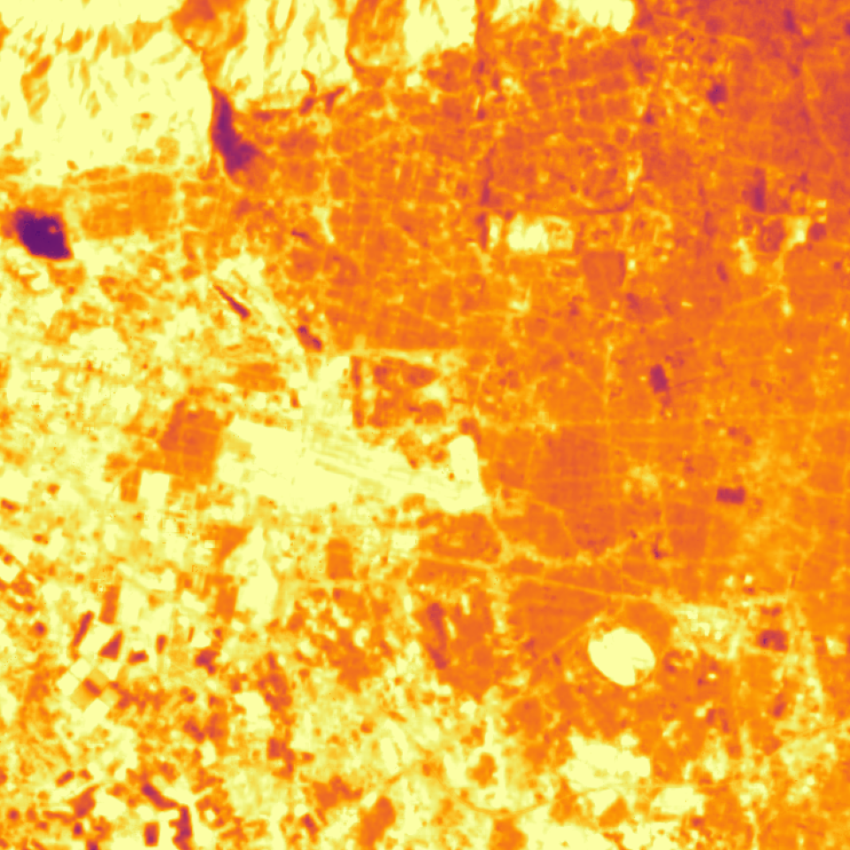
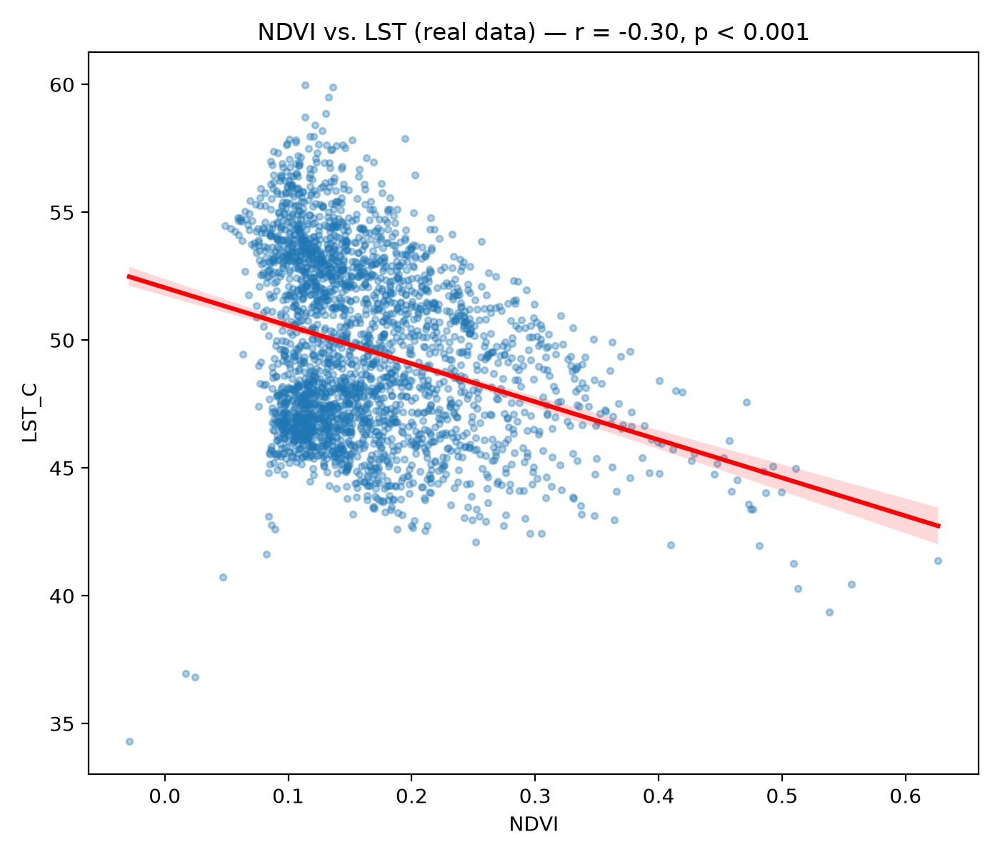
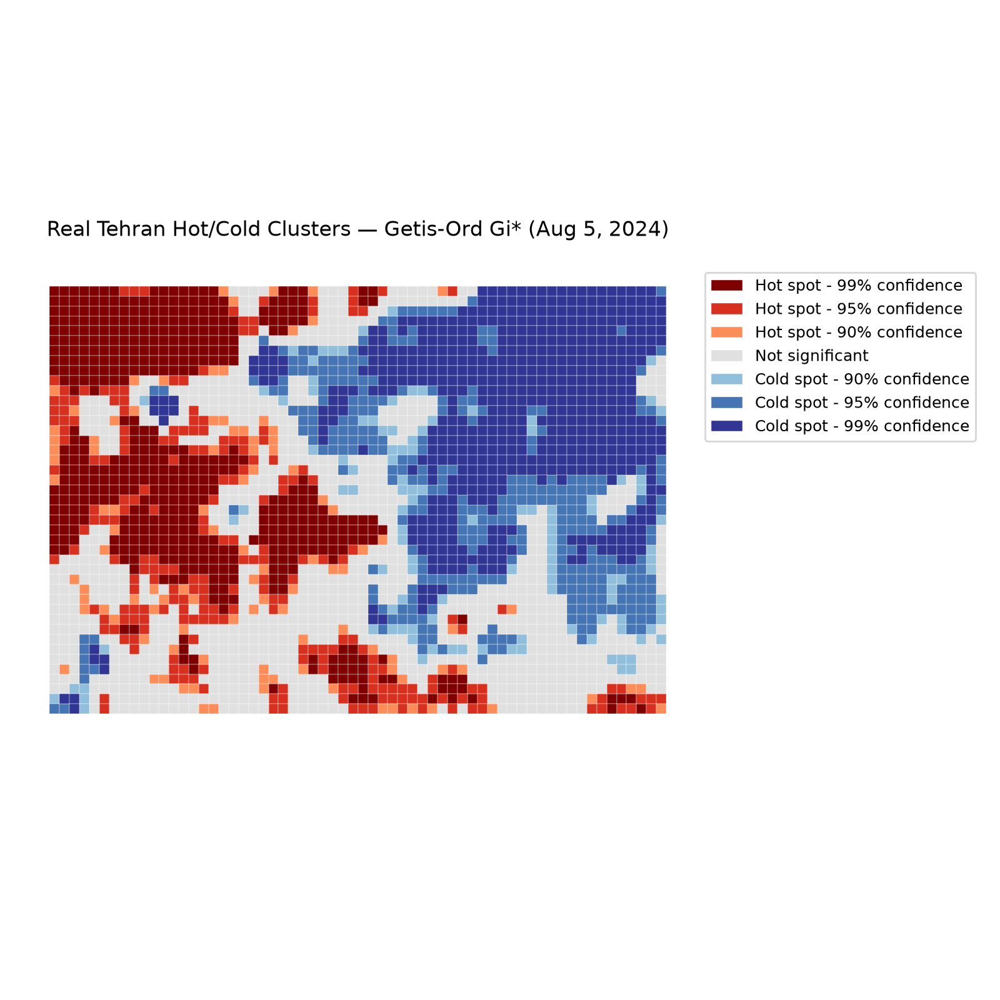
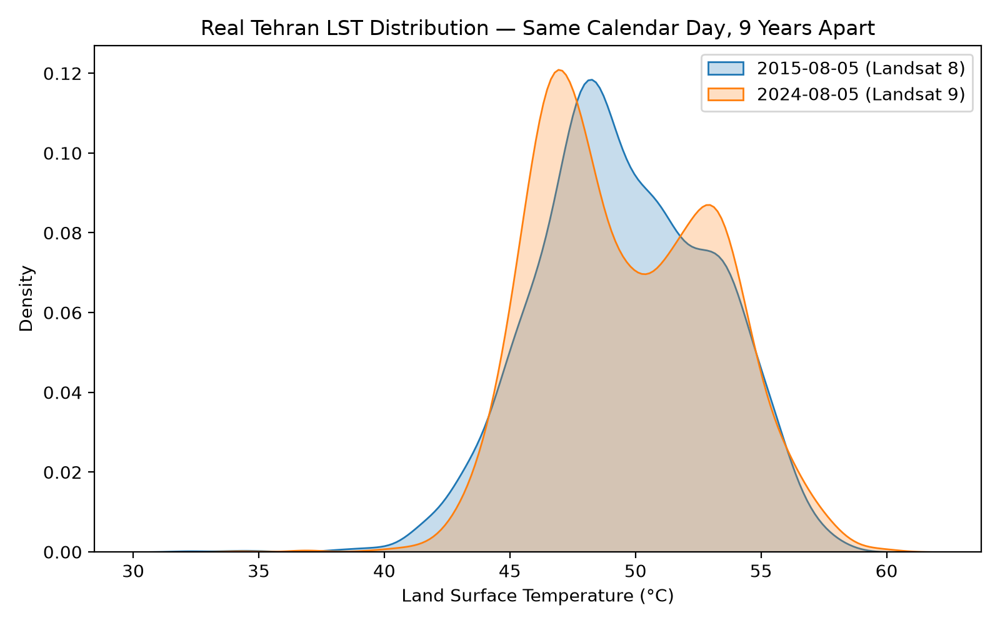
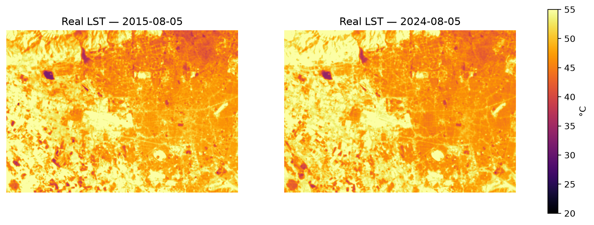

Retrieving land surface temperature from real Landsat 8/9 imagery, measuring its relationship with vegetation and built-up density, and mapping urban heat island hot spots with Getis-Ord Gi* spatial analysis.

Real LST · °C 35.70N 51.32E — 2024-08-05The pipeline turns a raw satellite image into analytical layers and spatial statistics in five stages — each implemented as its own module in the project's source code.
Filter scenes above 20% cloud cover and mask CFMask bits from the QA_PIXEL band
Compute NDVI, NDBI and NDWI from calibrated surface reflectance
Estimate LSE using the NDVI threshold method across three land cover classes
Correct brightness temperature using the simplified Planck equation
Correlation, 500 m grid sampling, and Getis-Ord Gi*
Emissivity is assigned by each pixel's vegetation fraction rather than a fixed constant — improving LST accuracy in mixed urban pixels.
λ = 10.895µm (TIRS thermal band), ρ = 14388 µm·K (= h·c/k_B) — the Artis & Carnahan (1982) method.
All data is free and open; the entire analysis requires no field data or purchased imagery.
| Source | Role in the analysis | Spatial resolution | Temporal coverage |
|---|---|---|---|
| Landsat 8 C2 L2 | LST / NDVI / NDBI, baseline period | 30 m | Summer 2015 |
| Landsat 9 C2 L2 | LST / NDVI / NDBI, recent period | 30 m | Summer 2024 |
| ESA WorldCover v200 | Land use classification | 10 m | 2021 |




A single-day comparison between the two dates isn't enough to estimate a long-term warming trend — daily atmospheric noise dominates it (the mean difference here is only 0.05°C). What these two scenes do show with high confidence is the spatial structural relationship between vegetation/built-up density and temperature: the NDBI–LST correlation is r = 0.55 (p < 10⁻²⁰⁰), stronger than the r = −0.30 for NDVI — meaning built-up density is a stronger predictor of surface temperature than vegetation deficit.
There are two execution paths: the main pipeline on Google Earth Engine (any AOI, any date range, requires a GCP account), and a second path that fetches these exact real scenes directly from the public Microsoft Planetary Computer catalog and reproduces the results above — with no account required at all.